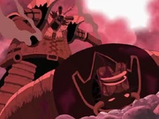
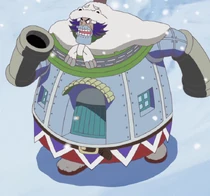
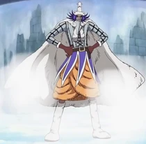

Баку Баку но Ми
Баку Баку но Ми — это Дьявольский плод типа Парамеция, который позволяет пользователю есть и жевать что угодно (кроме Кайросэки), начиная с дерева и заканчивая самыми крепкими металлами. Съеденные элементы могут быть слиты с телом пользователя в оружие или быть объединены вместе, чтобы создать что-то другое. «Баку» — звук удара по листу металла, тогда как «Паку» — звук процесса еды. Этот Дьявольский плод был съеден Ваполом. Сильные и Слабые стороны
Сильные и Слабые стороны
Главным достоинством плода, как показал Вапол, является то, что пользователь получает возможность растягивать свой открытый рот до крупных размеров и поедать такие предметы, которые иначе были бы несъедобны или токсичны для обычного человека. Он также получает способность превращать свое тело в оружие или что-то иное в зависимости от того, что он съел, или видоизменить и объединять съеденные объекты которые он потом извергает.Однако точно не известно, как долго пользователь может поддерживать измененное тело.
В то время как поедание чего угодно, даёт пользователю большой арсенал способностей в бою и вне его, плод так же делает пользователя постоянно голодным, как например жалуется Вапол, хотя это только на пользу пользователю, который может съедать, казалось бы, неограниченное количество пищи, без особых усилий. "Жевательные" продукты, такие как резина, могут вызвать трудности у пользователя при их поедании.Кроме того, пользователь может использовать только те объекты, которые он съел в течение последних 24 часов, и после прошедшего времени, он не сможет их больше использовать. Кроме этого, пользователь также зависит от стандартных слабостей Дьявольских плодов.
ИспользованиеВапол использовал силы, дарованные этим плодом, в основном для поглощения различных предметов. К ним относятся различные вещи: от ножей до целых домов. Из-за этого, Вапол может нанести огромный ущерб и неудобства окружающим его людям, и только так он может утолить свой аппетит.Вапол может также использовать силу своего плода для боевых целей, например, проглотив своего противника полностью или с помощью силы трансформации, усилить своё тело. Ему также удалось пережить лавину и спасти двух своих подчиненных, путем проглатывания больших снежных масс и удерживания своих подчиненных в безопасности во рту.
После того, как он потерпел поражение от Луффи и стал бездомным, Вапол смог придумать более полезное и продуктивное применение способностям своего Дьявольского плода. Используя свою технику Baku Baku Factory, Вапол сумел создать несколько игрушек, чтобы продать их за средства существования.Взамен, ему удалось создать новую индустрию, которая позволила получить ему новую власть.
Атаки Yukigesho (雪化粧 Yukigeshō?, дословно означает "Снежное Покрытие"): Вапол прячется на снежном пейзаже острова Драм и, находясь в засаде, ждёт нарушителей, при этом его челюсть всё время раскрыта, при обнаружении нарушителя он выпрыгивает из укрытия и пытается проглотить нарушителя. Wapol Defeats Dalton Вапол использует Baku Baku Shoku: Ningen Heiki против Далтона.
Baku Baku Shock (バクバク食（ショック） Baku Baku Shokku?, дословно означает "Chomp Chomp Food"): После поглощения еды (камней, пушки, дерева и т.д.) Вапол проецирует всё, что съел на своём теле. Этот прием был впервые показан, когда Вапол превратил себя в ходящий дом с пушками вместо рук.Различными формами в которые превращался Вапол до сих пор при использовании этой техники являются крупная форма, состоящая из различных видов оружия,дом с пушками вместо рук, деревянная форма с длинной веткой вместо носа и дерева, выходящего из его головы,форма с лампой вместо головы в комплекте с горящей свечой,а также форма скамейки в парке.
Bero Cannon (ベロ大砲（キャノン） Bero Kyanon?, дословно означает "Язык-Пушка"):Вапол превращает свой язык в пушку и стреляет из неё по врагу. Arm Cannon (アーム大砲（キャノン） Āmu Kyanon?, дословно означает "Рука-Пушка"):Вапол превращает свою руку или руки в пушки и атакует пушечными ядрами своего противника. Ningen Heiki (人間兵器 Ningen Heki?, дословно означает "Человек-Оружие"): Самая мощная трансформация Вапола.После поедания все оружие арсенала, Вапол использует "Баку Баку Шок" и превращает все свои части тела в оружие. Wapol House Wapol House
Wapol House (ワポルハウス Waporu Hausu?, дословно означает "Вапол-Дом"): После съедания Ваполом одного "обжаренной в масле пушки", одного "пушечное ядра", "пушек и порох на салат", и один "дом на гриле", его тело и превращается в дом в комплекте с дверями, камином, окнами. Он также преобразует руки в пушками, дымоход также снабжён пушкой. Baku Baku Factory (バクバク工場（ファクトリー） Baku Baku Fakutorī?, дословно означает "Жеваный Завод"): Техника, с помощью которой Вапол сочетает в себе две или более разные вещи которые он проглотил, чтобы создать что-то ещё. После поражения от Луффи , Вапол часто использовал эту технику для создания игрушек как средство для существования. Побочным продукт найденный в игрушках, созданных этой техникой, которая была обнаружена учеными, представляет собой новый тип стали, намекает, что этот плод может также соединить неизвестные минералы. Эта сталь была названа учеными как вапометалл. Slim Wapol Slim-up Wapol.
Slim-up Wapol (スリムアップワポル Surimuappu Waporu?, дословно означает "Похудевший Вапол"): Вапол заглатывает большую часть своего тела, до тех пор не будет видна только одна его нижняя челюсть. После этого он выскакивает и показывает себя как более тощего и выше ростом версию себя. 
Атаки из фильма Musshuru Wapol Cannon (ムッシュールワポルキャノン Муссюру Вапору Кянон?, "Муссюру-Вапол Пушка"): Вапол сливается со своим братом, Муcшуру и Королевской пушкой "Бликинг". Вапол как доминирующая личность, мог использовать силу Дьявольского плода брата и создать ядовитую споровую бомбу с таймером на груди. В этой форме "Пушка Бликинг" крепится к спине вместе с Fatal Bomb загруженной внутри, указывая вверх. Он также владел четырьмя руками, две из них его в виде топоров, а две другие его брата.
Прочее"Баку" — звук удара по металлу, тогда как "Паку" — звук жевания. Название плода так же может происходить от "baku baku tabeteru", что означает "прожевывать". SBS Vol 33 01 (Слева) Луффи, Чоппер, Нами, Зоро (Справа) Санджи, Робин, Усопп Имя: Гордон (выбранно случайно)
Фанат спросил Оду,что случилось бы,если бы Вапол съел Луффи, Зоро, Нами, Усоппа, Санджи, Чоппера и Робин, и соединил бы их вместе, как Чессмаримо. Ода ответил рисунком существа,которого он назвал "Гордон". Оно сделано из Соломенной шляпы Луффи, Рогов Чоппера, волос Нами (на плечах), мечей и харамаки Зоро, брови Санджи (на макушке), челки Робин, и носа Усоппа (на левом плече). Способности Баку Баку но Ми работают аналогично старой фразе: "Ты — то, что ты ешь". Другой возможной отсылкой является Баку, японская мифологическая химера, которая ест кошмары. Хотя один человек может иметь силу только одного Дьявольского плода, Вапол, возможно, может обходить это правило, съедая пользователей плодов и забирая их способности. Это было продемонстрировано в девятом фильме, в котором Вапол съел своего брата Муссюру и объединил в себе способности двух Дьявольских плодов. Однако, это не является каноничной способностью данного плода. Кроме того, когда один из фанатов спросил Оду в SBS, о том, получит ли он способности плода Гому Гому но Ми, если съест Луффи, Ода ответил, что он получит только пищевое отравление.